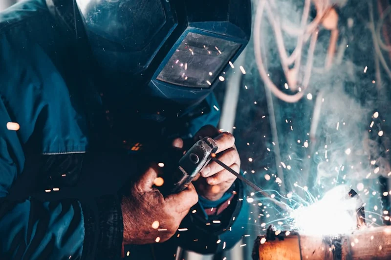

Collection 011890 — 1985
18,420 records
Photographs
Shop floors, portraits, aerials, and neighborhood views. Many identified by worker, plant, and year.
Search photographs →01 — Institutional hero
A scholarly, public archive for the manufacturing life of the Great Lakes — shop floors, neighborhoods, and the records they left behind.
Established 1987 · Nonprofit · Free and open to researchers, educators, and the public.
Shop floors, portraits, aerials, and neighborhood views. Many identified by worker, plant, and year.
Search photographs →Pay stubs, manuals, union newsletters, company correspondence, and plant records.
Search documents →Recorded interviews with workers, organizers, and families. Transcribed and indexed.
Listen & read →Tools, badges, garments, and shop artifacts. Stored and photographed for remote reference.
Browse objects →
Our cataloging prioritizes identification: who made it, where they worked, and when. Many photographs arrive with names on the back — we keep them there.
Featured object details beyond supplied collection counts are marked as placeholder. No fabrication of dates, locations, or identifiers.
Start with the catalog — every record is searchable by name, plant, year, or subject. Reading room staff pull photographs and documents for in-person viewing; oral histories stream with transcripts.
We host class visits and family research sessions. Many visitors arrive with a single photograph or pay stub and leave with context about the plant, the neighborhood, and the work.
“Industry remembered is not
about machines. It’s about
who showed up to run them.”
We preserve material that industry itself often discarded: the manual that went home in a toolbox, the portrait on the break-room wall, the interview recorded at a kitchen table. That’s the history that would otherwise disappear.
Established 1987 by historians and former plant workers. Nonprofit, independent, and accountable to the communities whose history we hold.
A photograph, a name, a plant, a year — whatever you hold, we can help place it in the larger holdings.